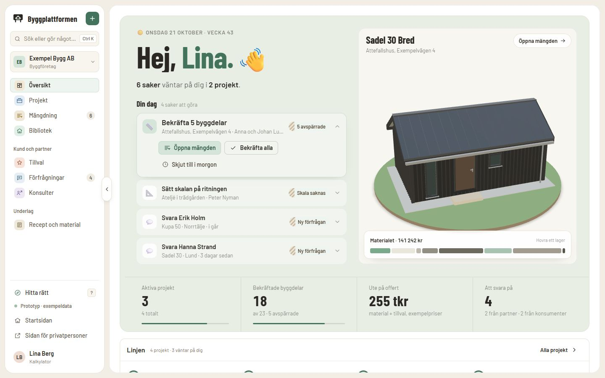
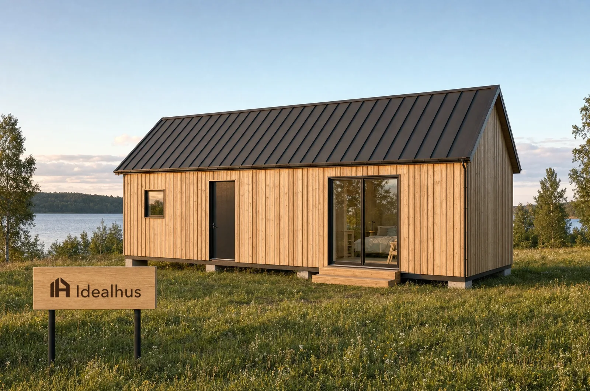
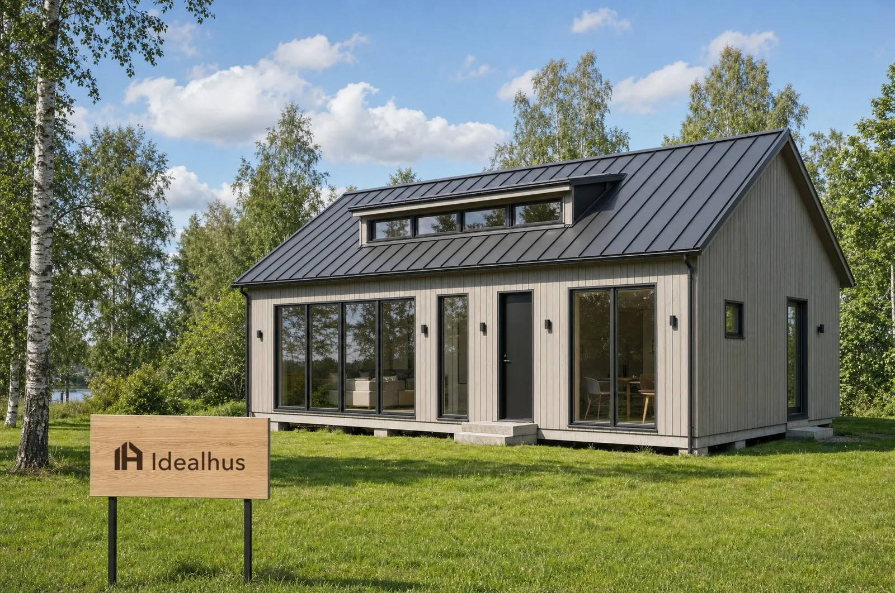
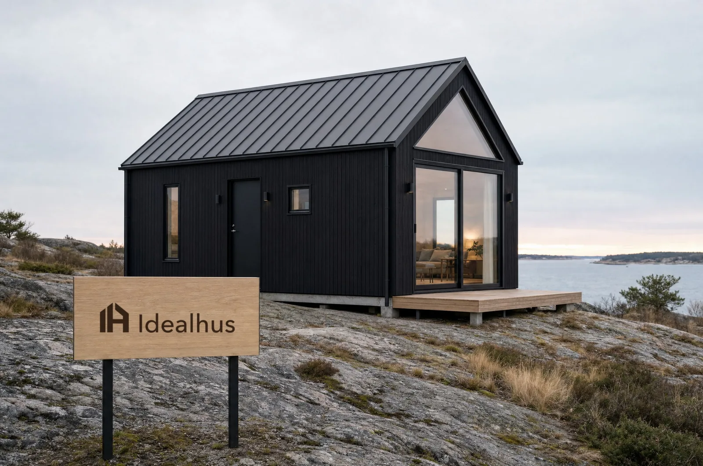
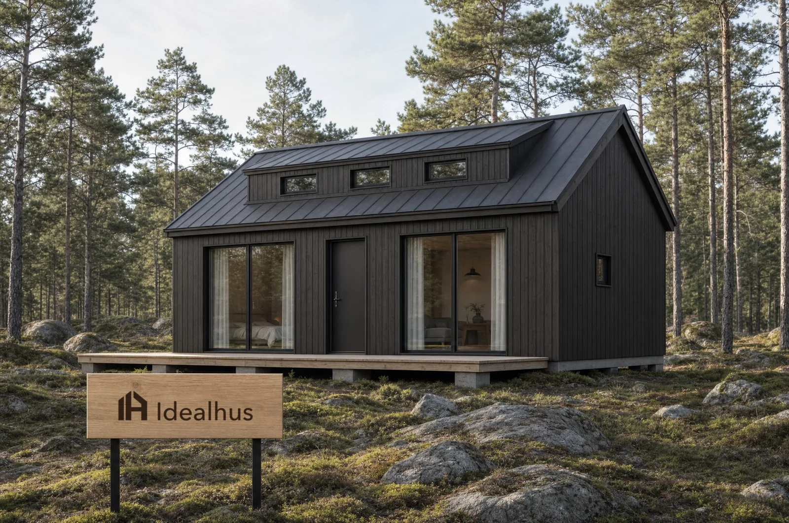

Varje siffra med källa
Materialet räknas ur husets egna mått, och varje rad visar var den kommer ifrån.
Välj ett hus och gör det till ditt. Byggaren räknar materialet post för post, och ni följer samma projekt hela vägen till order.

Materialet räknas ur husets egna mått, och varje rad visar var den kommer ifrån.
Färg, tak, altan och insida väljs direkt på huset – och blir en bilaga till kontraktet.
Underlag, mängd, offert och order på samma ställe, utan att byta verktyg.
Anpassat för dig

Välj ett hus, gör det till ditt i 3D och skicka en förfrågan. Sedan följer du allt på Mitt bygge.
Välj ditt hus
Mängda ur modell eller ritning, bekräfta varje byggdel och ta projektet hela vägen till offert och order.
Läs mer om mängdning
Låt kunden göra sina val i 3D och få full koll på tillvalen – valen blir en bilaga till kontraktet.
Läs mer om tillval
Ta emot materiallistor färdiga att prissätta och svara med pris, rabatt och leveranstid.
Läs mer om förfrågningarSmarta funktioner
Kända hus räknas exakt ur sina mått. Ritningar ritas av med kalibrerad skala och varje byggdel bekräftas.
Visa, jämför och mängda husen direkt. Se vilka som håller sig inom attefallsmåtten.
Kunden väljer i 3D och ser vad valen kostar. Valen blir en bilaga till kontraktet.
Skicka materiallistan till bygghandeln och jämför svaren med pris, rabatt och leveranstid.
Beställ arkitekt, konstruktion, energiberäkning eller kontrollansvarig till projektet.
Virket för flera projekt kapas i samma stänger, så att spillet minskar – och skillnaden syns i kronor.
I 3D
Dra isär Sadel 30 Bred och se vad varje lager kostar i material – räknat ur husets egna mått.
Husbiblioteket
Idealhus modeller, från attefallshus på 30 m² till fritidshus på 50 m². Alla finns i 3D och kan mängdas direkt.
Så går det till
Du väljer hus och tillval och skickar en förfrågan. Byggaren får den som ett färdigt projekt.
Byggaren räknar materialet ur husets mått och bekräftar varje byggdel.
Materiallistan går till bygghandeln. Du får offerten post för post, med dina val som bilaga.
Ordern läggs, virket kapas ihop och du följer allt på Mitt bygge.
Vanliga frågor
Hittar du inte svaret? Prova plattformen – allt i den är exempel och går att återställa.
Nej. Som privatperson väljer du hus och färger på huset och skickar en förfrågan. Byggaren tar hand om materialet och offerten.
Ur husets egna mått och ur ett recept för varje byggdel, med spill och kapning i riktiga virkeslängder. Varje rad visar sin källa, och det som inte är bekräftat är avspärrat tills någon godkänt det.
Ja. Ladda upp en bild av ritningen, sätt skalan, rita av väggar och ytor och bekräfta – sedan räknas materialet som för husen i biblioteket.
Din egen sida när du skickat en förfrågan: där ser du var bygget står, dina val, vem som är din byggare och vad som hänt.
Nej. Byggplattformen är en prototyp. Husen är Idealhus modeller med riktiga mått; priser, företag och personer är exempel.
Välj hus och färg här – materialet räknas direkt. Fortsätt sedan och skicka en förfrågan till byggföretagen.
Jag är byggföretag